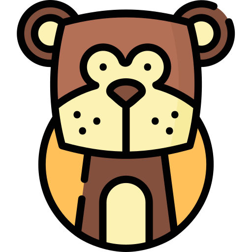

당신의 결과는?
난 당신의 연예인!
끼가 넘치는 재주꾼 <원숭이>
끼가 넘치는 재주꾼 <원숭이>

지치고 힘들 때 언제나 행복을 주는 당신!
정말 끼가 많고 말재주가 많다보니 팔방미인이라는 소리를 많이 듣는 편이랍니다.
또한 다재다능하고 총명하여 어떤 일이든지 잘할 수 있고, 유머 감각도 뛰어나 주변 사람들이 많이 따르는 마당발 타입입니다.
연애할 때 상대방의 기분을 잘 맞춰주고 즐거운 분위기를 유지하나, 다소 본인의 체면을 중시하는 경향이 있어요.
이 점 때문에 잔머리를 굴리다 타인에게 교활하다는 인상을 주게 될 수도 있기 때문에 조금 조심하면 좋을 것 같아요!
정말 끼가 많고 말재주가 많다보니 팔방미인이라는 소리를 많이 듣는 편이랍니다.
또한 다재다능하고 총명하여 어떤 일이든지 잘할 수 있고, 유머 감각도 뛰어나 주변 사람들이 많이 따르는 마당발 타입입니다.
연애할 때 상대방의 기분을 잘 맞춰주고 즐거운 분위기를 유지하나, 다소 본인의 체면을 중시하는 경향이 있어요.
이 점 때문에 잔머리를 굴리다 타인에게 교활하다는 인상을 주게 될 수도 있기 때문에 조금 조심하면 좋을 것 같아요!